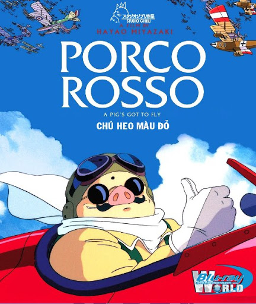

List phim

Vùng đất linh hồn
(千と千尋の神隠し)

Mộ đom đóm
(火垂るの墓)
Lâu đài bay của pháp sư Howl
(ハウルの動く城)

Công chúa sói Mononoke
(もののけ姫)
Hàng xóm tôi là Totoro
(となりのトトロ)
Nàng tiên cá phương đông
(崖の上のポニョ, がけのうえのポニョ)

Thế giới bí mật của Arietty
( 借りぐらしのアリエッティ, かりぐらしのアリエッティ))

Ngọn đồi hoa hồng anh
(コクリコ坂から)
Gió nổi
(風立ちぬ)

Lời thì thầm của trái tim
(耳をすませば)

Hồi ức về Marnie
(思い出のマーニー)
Lâu đài trên không Laptuta
(天空の城ラピュタ, てんくうのしろラピュタ)

Phù thủy Kiki (Tiki :>)
(魔女の宅急便)
Loài mèo trả ơn
(猫の恩返し, ねこのおんがえし)

Cuộc chiến gấu mèo
(平成狸合戦ぽんぽこ, へいせいたぬきがっせんぽんぽこ)

Gia đình Yamada
(高畑 勲)
Chú heo màu đỏ
(紅の豚, くれないのぶた)

Ngày hôm qua
(おもひ で ぽろぽろ)
Truyền thuyết công chúa Kaguya
(かぐや姫の物語)
Lời tự truyện
Hello em iu,
Tại anh thấy em thích coi mấy phim này lâu rồi mà hai đứa xem được có vài bộ à nên anh tổng hợp lại cho em dễ xem. Hơn nữa cũng là quà đút lót để mong em tha lỗi cho anh nha. Ai cũng có lúc sai lầm mà nhưng quan trọng là có nhận ra và sửa sai hay không. Anh đang cố gắng từng ngày để trưởng thành để bảo vệ và che chở cho em đấy bông hoa dại đặc biệt của anh <33

Tóm tắt phim
- Vùng đất linh hồn
- Mộ đom đóm
- Lâu đài bay của pháp sư Howl
- Công chúa sói Mononoke
- Hàng xóm tôi là Totoro
- Nàng tiên cá phương đông
- Thế giới bí mật của Arrietty
- Thế giới bí mật của Arrietty
- Gió nổi
- Lời thì thầm của trái tim
- Hồi ức về Marnie
- Lâu đài trên không Laptut
- Dịch vụ giao hàng của phù thủy Kiki (Tiền thân của Tiki)
- Loài mèo trả ơn
- Cuộc chiến gấu mèo
- Gia đình Yamada
- Chú heo màu đỏ
- Ngày hôm qua
- Truyền thuyết công chúa Kaguya
Chihiro Ogino là một cô bé 10 tuổi, đang cùng gia đình chuyển đến nhà mới thì cha cô rẽ nhầm một con đường lạ. Họ vô tình bước vào một thế giới ma thuật mà cha của Chihiro kiên quyết khám phá. Khi cha mẹ của Chihiro ăn tại một nhà hàng không người, cô tìm thấy một nhà tắm công cộng tráng lệ. Cô gặp một chàng trai trẻ, Haku, người khuyên cô mau trở lại con sông trước khi trời tối. Dù vậy, Chihiro phát hiện ra đã quá trễ, cha mẹ cô đã bị biến thành heo và cô không thể vượt qua con sông khi thủy triều đang dâng cao, khiến cô bị mắc kẹt trong thế giới linh hồn. Sau khi gặp lại Chihiro, Haku tìm cho cô một công việc từ Kamaji, một người đàn ông làm việc tại nhà tắm công cộng. Kamaji và một nhân viên tên Rin dắt Chihiro đến phù thủy Yubaba, người cai quản nhà tắm. Yubaba cho cô một công việc và đặt cho cô một cái tên mới: Sen (千?). Lúc đến thăm cha mẹ mình tại chuồng heo, Sen tìm lại một tấm thiệp chia tay gửi đến Chihiro và nhận ra cô đã quên mất tên thật của mình. Haku cho cô bé biết rằng Yubaba điều khiển người giúp việc bằng cách lấy đi tên thật của họ và cô sẽ bị mắc kẹt lại thế giới linh hồn nếu không nhớ được tên của mình. Trong lúc làm việc, Sen mời một sinh vật luôn im lặng đeo mặt nạ có tên là Vô Diện vào trong nhà tắm công cộng, tin rằng đó là một khách hàng. Một "linh hồn hôi thối" bất ngờ đến và là khách hàng đầu tiên của Sen. Cô bé nhận ra đây là vị thần của một con sông bị ô nhiễm. Để nhớ ơn người làm ông ta sạch sẽ, vị thần tặng cho cô một chiếc bánh bao thảo mộc thần kỳ. Trong lúc đó, Vô Diện dụ dỗ một nhân viên bằng vàng và nuốt chửng anh ta. Vô Diện đòi phục vụ thức ăn và trả tiền rất hậu hĩnh. Khi mọi người kéo đến mong chờ trả tiền, Vô Diện nuốt thêm hai nhân viên tham lam nữa.
Lúc đó tại phòng mình, Sen phát hiện ra những người giấy đang tấn công một con rồng và nhận ra đó chính là Haku biến hình. Khi Haku bị thương bay lên phòng Yubaba, Sen cũng tìm cách lên đó bằng cầu thang bên ngoài. Khi tìm thấy Haku, một người giấy dính vào lưng cô bé biến hình ra thành Zeniba, chị gái sinh đôi của Yubaba. Bà biến con trai của Yubaba là Boh thành một con chuột bạch, biến con chim của Yubaba thành một con ruồi nhỏ còn ba tay sai của Yubaba thành cậu bé con trai bà ta. Zeniba cho Sen hay rằng Haku đã ăn trộm chiếc ấn vàng của bà ta và cảnh cáo Sen rằng nó mang một lời nguyền chết chóc. Haku và Sen (cùng Boh trên lưng) bị rơi xuống phòng đun nước. Ở đó cô cho anh ăn một miếng bánh bao, giúp anh nôn được cả cái ấn và một con sên đen bị Sen dẫm nát.
Trong khi Haku còn bất tỉnh, Sen quyết định mang chiếc ấn trở lại trả cho Zeniba và xin lỗi thay Haku. Trước khi rời nhà tắm, Sen phải xử lý Vô Diện vì Yubaba cho rằng cô đã dẫn gã vào. Cô cho gã ăn phần còn lại của chiếc bánh bao. Vô Diện vừa đuổi theo Sen vừa nôn ra những gì hắn ăn và trở lại hình dạng ban đầu. Sen cùng Boh, con ruồi và Vô Diện lên đường đến gặp Zeniba. Ở nhà tắm lúc này, Yubaba phát hiện ra Boh mất tích vì Boh giả mạo đã trở lại hình dạng ba tên giúp việc. Haku hứa rằng sẽ mang Boh trở về với Yubaba, để đổi lại bà ta phải trả tự do cho Sen và cha mẹ cô.
Sen, Vô Diện, Boh và chú ruồi cùng đến nhà Zeniba. Zeniba, giờ đây là một "bà cụ" nhân từ, tiết lộ rằng tình yêu của Sen và Haku sẽ hóa giải lời nguyền của cô và Yubaba đã dùng con sên đen để kiểm soát anh ta. Haku trong hình hài con rồng đến nhà Zeniba, đưa Sen và Boh trở về nhà tắm. Vô Diện đồng ý ở lại nhà Zeniba, làm người giúp việc cho bà. Trên đường về, Sen nhớ rằng hồi bé mình bị ngã xuống sông Kohaku nhưng được sóng đánh lên bờ an toàn. Sau khi Sen đoán chính xác rằng Haku chính là thần sông Kohaku (và phát hiện ra tên thật của anh), Haku đã thoát khỏi sự điều khiển của Yubaba. Khi họ quay trở về nhà tắm, Yubaba bảo Sen phải tìm được cha mẹ mình trong một đàn heo thì mới có thể hóa giải lời nguyền cho họ. Sen đoán chính xác rằng không có con heo nào trong đó là cha mẹ, giúp cả gia đình giải thoát khỏi lời nguyền của Yubaba. Haku dắt cô trở lại cánh cổng của thế giới linh hồn và hứa sẽ gặp lại cô trong tương lai. Chihiro đoàn tụ với cha mẹ, những người trở lại hình hài cũ và không nhớ điều gì đã xảy ra. Họ trở lại chiếc xe phủ đầy lá và bụi sau nhiều ngày trôi qua và đi đến ngôi nhà mới.